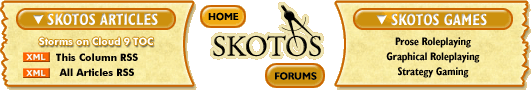

|
Traffic and Pipesby Scott Holliday My wife and I are in the process of planning and building our house. Combined with holding down two jobs, my time and creativity have both been suffering. The first lesson here is that creativity is not an endless resource. You only get so much, so spend it where you need it, and don't waste a single drop. The second lesson relates more to ideas from the construction process. My premise is that many features of a well-designed MMOG are the same as those in a well-designed house. The most obvious are stability and security, though what I wanted to concentrate on is the floor-plan. This relates to the MMOG in several ways. Map design is clear. But it also relates to the user interface and game-play. Early in the process, a designer must decide how everything fits together. There are advantages and disadvantages in every placement. For example, in a house, the kitchen and the bathrooms are the only rooms that need water, so they are often placed near each other, usually on opposite sides of the same wall. However, who wants a bathroom door that opens into the kitchen? In a MMOG, designers often spend days and months refining their map designs. The flow of player traffic is important on too many levels to leave to chance. In general, players like to see other players, because it gives the game a sense of life. If you've ever been the only resident of an MMOG city during the off-peak hours, you know exactly what I mean. However, in contrast, having too many players in one area causes traffic problems both for those players but also for the computers trying to communicate the constant changes to the scenery. In the same way, consider your kitchen. Kitchens are usually planned to minimize the movement required to get between the different points of interest. The bustling cook (such as myself) prefers it when everything is within easy reach. However, the downside is lack of floor and counter space. The perfect one-person kitchen becomes a madhouse when two or more people try to use it at the same time. Thinking of the MMOG, have you ever noticed that the most useful locations usually claim the most residents? The most important shops, banks, and public services are often traffic hazards. For the older gamers reading, you can probably recall what happens when these locations are put in close proximity. It's a hazard even more dangerous than the lag monster! If the server crashes, you might get stuck there for hours (or days). Instancing in the most recent games has changed the demand for territory while questing, but only a few of the best games have gone so far as to apply this to the shops and services of civilization. So where am I going with this? If you've read many of my other columns, you know that I'm a strong proponent of player-made content. I like the idea of a fresh world with no NPCs to muck it up. Imagine if all the banks and shops were player built? Where would the players build them? Obviously, in high-traffic areas. Thus attracting even more players, attracting more attractions, until gridlock? Too much traffic turns the "city" into a slum. You could instance the zone, but there are obvious downsides. You could restrict player flow inwards until there is equal flow outwards, but this seems like an arbitrary ruling (and a silly thing to do). Or, you could let the players deal with the problem themselves, probably ending in an urban sprawl. Which way will it end? There have been some examples, such as the miles of player housing in UO. Does this make a good game experience? Yes and no. Could it be better? Obviously. How? I don't know. Which variables could you tweak to turn player-design into player-built fun? Considering the so-called second-generation MMOGs on the horizon, the big prize is an ongoing player-built world that continues to improve the experience for its new players. But what factors will encourage rather than discourage this event? Or is it just another pipe dream? [ <— #42: Death and Taxes | #44: Makers of Dusk and Dawn —> ] |